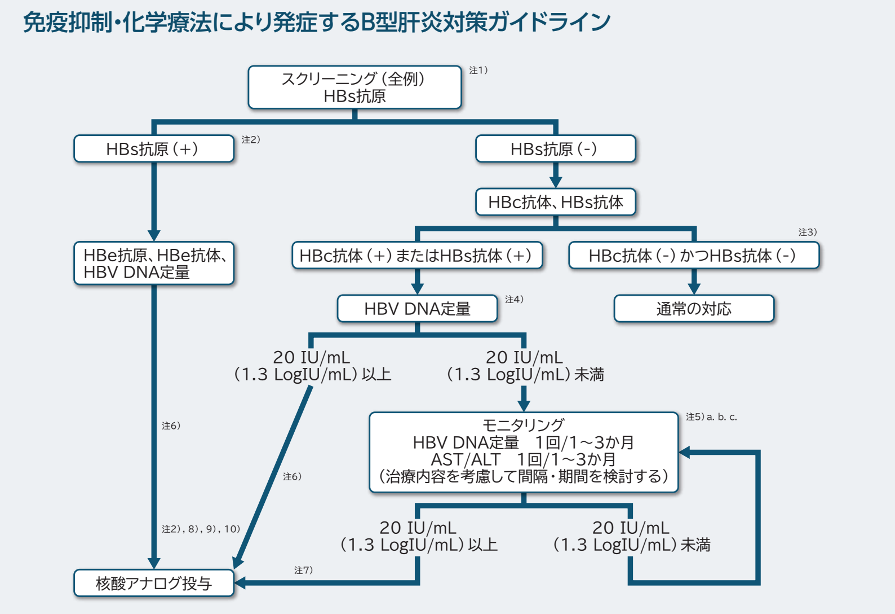
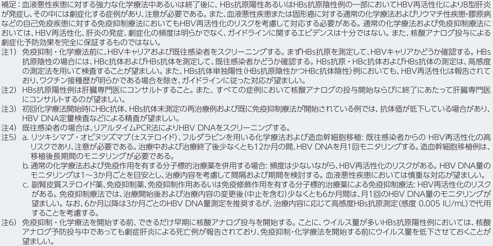
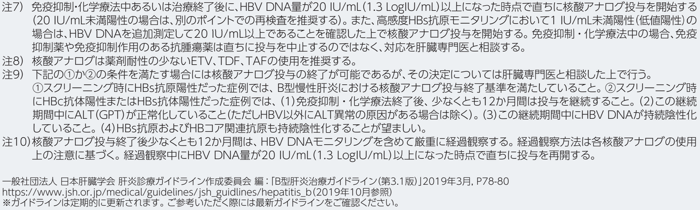

ICUでなぜB型肝炎を押さえるのか
HBVは世界で2.54億人が感染し、慢性化すると肝硬変・肝細胞癌（HCC）へ進展する。ICU/病棟で研修医が実際に遭遇する場面は、主に次の3つに集約される。
- 入院時・緊急検査でHBs抗原陽性が判明する — 既知でないキャリアが手術・侵襲的処置の前に見つかる。まず血清マーカーを正しく読む（§2）。
- 急性肝不全（劇症肝炎）の原因になる — 急性HBV感染の一部や、慢性HBVの重症フレアが脳症・凝固障害を伴う肝不全に進む（§4）。
- 免疫抑制・化学療法で「de novo B型肝炎」を起こす — 既往感染（HBs抗原陰性・HBc抗体陽性）でも再活性化し、劇症化・死亡しうる。開始前スクリーニングと核酸アナログ予防が鍵（§5）。
病態・診断・治療・予防の包括的な総説は、緑テーマのまとめページ Hepatitis B: A Review（JAMA 2026） に整理してある。本ノートは研修医が現場で使う要点と、サイト内の関連ページを横断的にまとめたもの。
血清マーカーの読み方
HBVの検査はマーカーが多く混乱しやすい。まずHBs抗原を見て「いま活動性の感染があるか」を判断し、陰性ならHBs抗体・HBc抗体で「既感染か・ワクチン後か」を切り分ける、という2段階で考える。
HBs抗原 陽性 なら、急性期・慢性期いずれかの活動性B型肝炎がある。急性か慢性かは HBc抗体のクラスで見分ける。
- 急性肝炎：IgM-HBc抗体 陽性が重要（直近の感染を示す）。
- 慢性肝炎：Total（＝IgG-）HBc抗体 陽性になる。
HBs抗体 陽性 なら、既感染（過去に感染して治癒）またはワクチン接種後のいずれか。これは HBc抗体の有無で区別する。
- 既感染：HBc抗体 陽性になる。
- ワクチン接種後：ワクチンでは HBc抗体は獲得できないため 陰性。
各マーカーの意味を表で整理すると次のとおり（詳細は HBV Review §血清学的・ウイルス学的診断）。
| マーカー | 臨床的意義 |
|---|---|
| HBs抗原 | 感染の指標。6ヶ月以上の陽性持続で慢性感染と定義する。 |
| HBs抗体 | 免疫の指標。HBc抗体も陽性なら過去感染による免疫、HBc抗体がなければワクチンによる免疫。 |
| HBe抗原 | ウイルス複製活性が高いことを示す（感染初期・免疫寛容期・免疫活性期）。 |
| IgM-HBc抗体 | 急性感染の指標。HBs抗原消失後・HBs抗体出現前のウインドウ期に唯一検出されるマーカーになりうる。 |
| IgG-HBc抗体 （総HBc抗体） | 現感染または過去感染の指標。慢性感染ではHBs抗原とともに持続陽性。 |
| HBV DNA定量 | ウイルス複製活性の定量。治療適応・治療効果判定・再活性化モニタリングの主要指標。 |
症例で確認 — 緊急検査の HBs抗原
緊急検査オーダーでも HBs抗原は確認できる。実際の読み方を2例で確認する。
HIVの既往があり、食道静脈瘤を契機に撮影した腹部CTで肝硬変を指摘された MSM の男性。HBs抗原 陰性のため活動性肝炎はない。一方で HBc抗体 陽性なので、ワクチンではなく既感染と判断できる。
別の症例では、緊急検査のオーダーで HBs抗原 陽性と判明した。HBs抗原陽性＝活動性の感染ありとして、以降の侵襲的処置・薬剤選択・スタッフの曝露対策につなげる。
急性B型肝炎と劇症化（急性肝不全）
急性感染では曝露後の平均潜伏期間は約90日で、50〜70%は無症状。免疫正常成人の約95%は自然回復するが、0.1〜0.5%は脳症・黄疸・凝固障害を伴う急性肝不全に進行する。
慢性HBVの増悪（フレア）はHBV DNA複製の急増を伴い、自然発症のほか免疫抑制療法・肝毒性薬・他肝炎ウイルス重感染・抗ウイルス薬中止で誘発される。重症フレアでは ALT >1,000 U/L に達し、急性肝炎と誤診されることもある。
HBVはアジア太平洋地域における急性肝不全（ALF）の主要原因の一つで、ICUでは凝固障害・脳症・腎障害を伴う重症像で出会う。HBV関連ALFには核酸アナログ（例：エンテカビル）を投与する。ALF全体の評価・管理は 急性肝不全（UpToDate 2025）・ACG ALFガイドライン2023・急性肝不全（Lancet 2024） を参照。
de novo B型肝炎 — 免疫抑制・化学療法時の再活性化
免疫抑制薬・抗癌薬・生物学的製剤の投与で、既往感染（HBs抗原陰性・HBc抗体陽性）の患者でもHBVが再活性化し、劇症肝炎・死亡に至りうる。これを de novo B型肝炎と呼ぶ。「HBs抗原が陰性だから大丈夫」ではない点が最大の落とし穴。
対策の原則は、免疫抑制・化学療法を行う全例で開始前にスクリーニングし、リスクに応じて核酸アナログ投与またはHBV DNAモニタリングを行うこと。日本肝臓学会ガイドラインのフローを以下に示す。



- 核酸アナログは ETV・TDF・TAF を用いる。
- 高リスクレジメン（リツキシマブ・オビヌツズマブ ±ステロイド、フルダラビン、造血幹細胞移植）では再活性化リスクが高く、HBV DNAを 1回/月でモニタリングする。通常の化学療法・免疫抑制では1〜3か月ごと。
- 再活性化は治療終了後にも起こりうるため、核酸アナログ終了後・免疫抑制終了後も少なくとも12か月間はモニタリングを継続する。造血幹細胞移植ではさらに長期。
ステロイドを軸にした再活性化リスクの3点層別化（A群：HBs抗原陽性／B群：HBs抗原陰性＋HBc抗体陽性の既往感染）は ステロイド誘発感染症ノート §開始前スクリーニング に、リツキシマブ前の必須HBVスクリーニングとエンテカビル予防は NCCN WM 2026 に詳しい。
核酸アナログ（NUC）治療の要点
NUCはHBV DNA複製を阻害する経口薬。現在使用される ETV・TDF・TAF は10年間の単剤治療でも耐性が確認されていない。一方、ウイルスの鋳型である核内cccDNAは根絶できないため、治療は原則として長期〜無期限となる。
| 薬剤 | 用量 | 特徴 |
|---|---|---|
| エンテカビル（ETV） | 0.5 mg/日 | コスト面で優位。ラミブジン既往・HIV重感染・妊娠時は避ける。腎機能低下時は用量調整。 |
| テノホビル DF（TDF） | 300 mg/日 | 妊娠・HIV重感染時に好ましい。腎障害・骨密度低下リスクあり。腎機能低下時は用量調整。 |
| テノホビル AF（TAF） | 25 mg/日 | 腎・骨毒性がTDFより有意に少ない。妊娠・HIV重感染時に好ましい。 |
治療適応の国際ガイドライン比較・week 48成績・中止と再発リスクなどは HBV Review §核酸アナログ療法 を参照。肝臓内科の長期管理（NUC・移植成績）の整理は 肝臓内科 試験ノート にもある。
ICUでの実務まとめ
- マーカーは2段階：まず HBs抗原（活動性感染の有無）→陰性なら HBs抗体・HBc抗体（既感染かワクチン後か）。急性は IgM-HBc、慢性は IgG-HBc。
- HBs抗原陽性を見たら：侵襲的処置・薬剤選択・スタッフ曝露対策につなげ、肝臓内科／消化器内科にコンサルトする。
- 免疫抑制・化学療法の前は必ずHBVスクリーニング：HBs抗原だけでなく HBc抗体・HBs抗体まで。既往感染でも de novo 再活性化が劇症化しうる。高リスクは核酸アナログ予防＋HBV DNA月1モニタリング。
- 急性肝不全（脳症・凝固障害）を見たら：HBVを鑑別に入れ、HBV関連なら核酸アナログを開始。重症フレアの ALT >1,000 を急性肝炎と取り違えない。